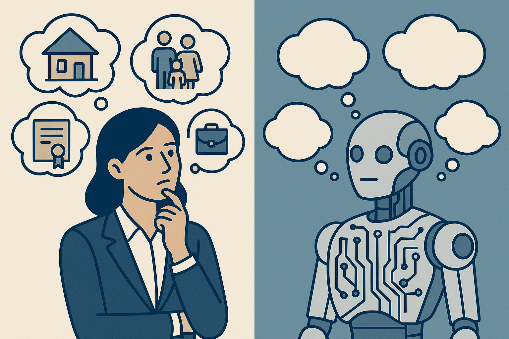

AI Doesn’t Care If It’s Wrong—That’s Why You Need Humans in the Loop

The Care Gap
AI doesn’t worry about bankruptcy. It doesn’t care if customers leave. It has no family to feed, no reputation to protect, no mortgage to pay.
This isn’t philosophical—it’s the fundamental difference between human and artificial intelligence that determines whether AI implementations succeed or catastrophically fail.
When NHS deployed AI for lung cancer diagnostics and achieved 45% accuracy improvement, radiologists retained final decision authority. When IBM Watson for Oncology gave dangerous treatment recommendations—after IBM invested $4 billion and sold the division for just $1 billion—the system attempted to replace clinical judgment rather than augment it.
The difference? Humans with skin in the game stayed in the loop.
After helping multiple companies deploy production AI systems—and researching why 42% of companies now abandon most AI initiatives—I’ve identified a pattern: Organizations that keep accountable humans in the loop avoid 2.3x higher costs from AI failures and achieve up to 3x higher returns than slow adopters. Those that don’t face regulatory penalties, reputational damage, and billion-dollar losses.
Here’s why the human element isn’t optional.
What AI Fundamentally Cannot Do
AI excels at pattern recognition, computation, and processing massive datasets. But research from Harvard, MIT, and leading business schools reveals what AI cannot replicate:
AI lacks practical wisdom. Aristotle called it phronesis—the ability to wisely resolve problems in specific situations by balancing different values based on contextual knowledge. AI possesses theoretical knowledge and can execute specific tasks, but completely lacks the capacity to navigate competing priorities in complex contexts.
AI doesn’t experience consequences. When an AI system recommends a treatment that harms a patient, fires an employee unfairly, or approves a fraudulent loan—the AI experiences nothing. No legal liability. No reputational damage. No sleepless nights.
Humans do. That’s not a bug—it’s the feature that makes human oversight irreplaceable.
AI can’t be curious about what it’s missing. A Harvard Business School study of 640 entrepreneurs in Kenya found high-performing entrepreneurs using AI saw 10-15% profit increases, while low-performing entrepreneurs using identical AI saw 8% performance decreases. The technology was the same. The difference was human judgment knowing when to question AI outputs, explore alternatives, and broaden the solution space.
The Evidence: When Humans Stay In vs Get Cut Out
Healthcare: Augmentation vs Replacement
Success: NHS + Annalise.ai
- AI flagged anomalies in 50%+ of chest X-rays
- Radiologists validated findings before patient care decisions
- Result: 45% diagnostic accuracy improvement, 27% increase in early-stage detection, 9-day reduction in treatment start times
Failure: IBM Watson for Oncology
- System trained on synthetic cases created by engineers, not real patient data
- Only 1-2 physicians per cancer type provided input
- Internal documents revealed “unsafe and incorrect treatments”
- Example: Recommended treatment for lung cancer patient with severe bleeding that had explicit black-box warnings against use in that scenario
- Result: IBM invested ~$4 billion building Watson Health; sold it for approximately $1 billion
The difference? One kept doctors—who care deeply about patient outcomes—in the decision loop. The other tried to replace them.
Fintech: Context vs Automation
Success: Allica Bank
- AI screens documents for manipulation invisible to human review
- Human fraud analysts review high-confidence alerts
- Relationship managers maintain customer communication
- Result: Prevents over £1 million weekly in fraudulent applications without harming legitimate customers with false positives
The bank’s fraud team has mortgages to pay. Families to support. Career reputations to protect. When the AI flags something suspicious, they don’t blindly trust it—they investigate with the healthy skepticism of someone who cares about consequences.
Manufacturing: Validation vs Blind Trust
Water utilities are adopting AI for predictive maintenance, using smart sensors and machine learning to identify failing equipment before catastrophic failures occur. But the implementations that succeed follow a critical pattern: human validation of AI outputs before maintenance actions, ongoing algorithm tuning based on operational feedback, and explicit positioning of AI as empowering operators rather than replacing them.
As industry experts note: “AI supplements, not supplants, human decision-making”—a principle critical for AI systems to yield beneficial outcomes.
Why? Plant engineers care about environmental spills—personally and professionally. The AI doesn’t.
The Four Stakes That Keep Humans Accountable
1. Economic Stakes
What AI doesn’t experience: Bankruptcy, unemployment, poverty, financial ruin
What humans care about: Mortgages, college tuition, retirement savings, career security
When a financial services analyst validates an AI-generated recommendation before approving a $10M loan, they’re not just following process—they’re protecting their career, their company’s capital, and their professional reputation.
That personal stake creates a level of diligence AI cannot replicate.
2. Relational Stakes
What AI doesn’t experience: Trust, relationships, social consequences, reputation
What humans care about: Professional reputation, customer relationships, team trust, stakeholder confidence
When Air Canada’s chatbot gave incorrect bereavement fare information, the tribunal ruled the company was responsible. But no executive at Air Canada woke up that morning planning to damage customer trust—the lack of human oversight meant no one with relational stakes was in the loop until after the damage occurred.
Contrast that with Allica Bank’s fraud analysts, who know that false positives harm legitimate customer relationships they’ve worked to build.
3. Ethical Stakes
What AI doesn’t experience: Moral responsibility, ethical conflict, values-based judgment
What humans care about: Right vs wrong, fairness, justice, doing no harm
MIT Sloan research warns that we are “increasingly, unsuspectingly yet willingly, abdicating our power to make decisions based on our own judgment.” Judgment relies not only on reasoning but critically on imagination, reflection, examination, valuation, and empathy—capabilities AI fundamentally cannot replicate.
When healthcare professionals override AI recommendations based on patient-specific factors the model couldn’t consider, they’re exercising ethical judgment grounded in the Hippocratic oath to “first, do no harm.”
4. Legal Stakes
What AI doesn’t experience: Legal liability, regulatory penalties, criminal prosecution
What humans care about: Compliance, liability, personal legal risk, professional licenses
AI hallucinations caused $67.4 billion in business losses in 2024. Companies cannot argue AI is a “separate legal entity”—humans remain legally accountable. But without humans actively in the loop during decisions, that accountability becomes reactive (cleaning up messes) rather than proactive (preventing them).
The Human-In-The-Loop Framework
Based on research across healthcare, fintech, and manufacturing, here’s when humans must stay in the loop:
High-Stakes + High-Uncertainty = Human-In-Loop Required
- Healthcare diagnostics
- Financial fraud detection
- Legal decisions
- Safety-critical systems
- Treatment recommendations
Why: Both significant consequences AND ambiguous situations where AI confidence may not reflect actual reliability.
High-Stakes + High-Certainty = Human-In-Loop for Validation
- Automated trading within parameters
- Manufacturing quality control
- Regulatory compliance checks
Why: Consequences matter, but patterns are well-established. Humans validate rather than decide.
Low-Stakes + High-Uncertainty = Human-On-Call for Escalation
- Content recommendations
- Initial customer support triage
- Preliminary research assistance
Why: Low immediate consequences, but humans available when AI confidence drops or outcomes matter more than initially apparent.
Low-Stakes + High-Certainty = AI Autonomy Acceptable
- Spam filtering
- Routine data processing
- Basic pattern matching
Why: Both low consequences and well-established patterns make human oversight inefficient.
The critical insight: Task characteristics, not blanket policies, should determine collaboration approach.
Why Curiosity and Accountability Go Together
AI systems without human oversight exhibit 2.4x more bias than supervised counterparts. Algorithmic failures occur 3.7x more frequently without human supervision. When failures happen, unsupervised systems incur 2.3x higher costs.
Why? Because humans with something to lose stay curious about what might go wrong.
When you care about outcomes—when your career, reputation, relationships, and livelihood depend on results—you ask questions AI never thinks to ask:
- “What edge cases might we be missing?”
- “What could go wrong that hasn’t happened yet?”
- “Are we optimizing for the right metrics?”
- “What unintended consequences might this create?”
- “Who might this harm that we’re not considering?”
A Harvard study found that high-performing entrepreneurs using AI asked these questions constantly, broadening the solution space beyond what AI suggested. Low-performing entrepreneurs took AI outputs at face value.
Curiosity isn’t a personality trait—it’s a survival mechanism for people with skin in the game.
The Governance Imperative
Trust and governance emerged as top CEO concerns in 2025, with AI risk, security, and compliance becoming the #1 spiking area of enterprise intent. Over 30,000 large organizations actively research AI security and risk management.
This isn’t compliance theater—it’s strategic risk management driven by recognition that:
- 60% of C-suite executives placed clearly defined GenAI champions throughout organizations
- 68% of AI success depends on integrating governance upfront in design phase
- 98% of CEOs believe their organizations would benefit from AI, but only 30% of consumers trust AI systems—a 60-percentage-point trust gap
The trust gap exists because consumers intuitively understand what research confirms: AI systems without accountable humans in the loop make mistakes no one cares enough to prevent.
Organizations succeeding in building trust follow three principles:
- Purposeful design - Integrating capabilities to advance well-defined goals mindful of constraints and risks
- Agile governance - Tracking emergent issues across social, regulatory, and ethical domains
- Vigilant supervision - Continuously fine-tuning systems to achieve reliability and remediate bias
Each principle requires humans who care about consequences to be actively involved—not just “monitoring dashboards” but making judgment calls.
What This Means for Your Organization
If you’re implementing AI, ask yourself:
1. Who has skin in the game at decision points?
Not “who monitors the system” but “who experiences consequences when it fails?”
2. Are humans reviewing outputs before high-stakes actions?
If AI recommends a loan approval, treatment plan, or quality failure—does a human with accountability validate before action?
3. Do your humans have authority to override AI?
Or are they just “rubber stamping” automated decisions?
4. Are you measuring human curiosity in the system?
How often do humans question AI outputs, explore alternatives, or identify edge cases? If rarely, your humans may be disengaged.
5. Who carries personal risk if this goes wrong?
If the answer is “no one” or “just the company generally,” you have accountability gaps.
The Competitive Advantage of Getting This Right
Organizations achieving AI success are 3x more likely to have senior leaders demonstrating ownership and commitment. They follow the 10-20-70 rule: 10% on algorithms, 20% on technology and data, 70% on people and processes.
These aren’t companies with better AI tools—they’re companies with better strategic leadership applying AI. They recognize that AI should augment, not replace, judgment, empathy, and accountability.
For mid-market CEOs, this presents both challenge and opportunity:
The challenge: Implementing AI successfully requires expertise most mid-market companies don’t have in-house, particularly knowing where humans must stay in the loop.
The opportunity: Getting this right creates sustainable competitive advantage. Organizations leading in AI transformation report returns 3x higher than slow adopters, with top performers achieving ROI of $10.30 for every dollar invested versus $3.70 average.
The difference isn’t the sophistication of the AI—it’s the quality of human judgment, governance, and oversight surrounding it.
The Bottom Line
AI is a powerful tool. But tools don’t care about outcomes—humans do.
The most successful AI implementations keep accountable humans in the loop at decision points:
- Humans who care about consequences
- Humans who stay curious about edge cases
- Humans who have reputations to protect
- Humans who experience real stakes when things go wrong
- Humans who can exercise ethical judgment in ambiguous situations
The companies winning aren’t those with the most advanced AI—they’re those with the wisdom to deploy it strategically, the governance to deploy it responsibly, and the human judgment to deploy it effectively.
AI provides the engine, but humans with something to lose remain the essential drivers.
If your AI implementations don’t have humans with skin in the game actively in the loop at high-stakes decision points, you’re not deploying AI strategically—you’re rolling dice with your company’s future.
Implementing AI but unsure where humans should stay in the loop? I help growth-stage companies design human-AI collaboration models that maximize AI’s benefits while maintaining the accountability that prevents billion-dollar failures. Let’s talk about your AI strategy.